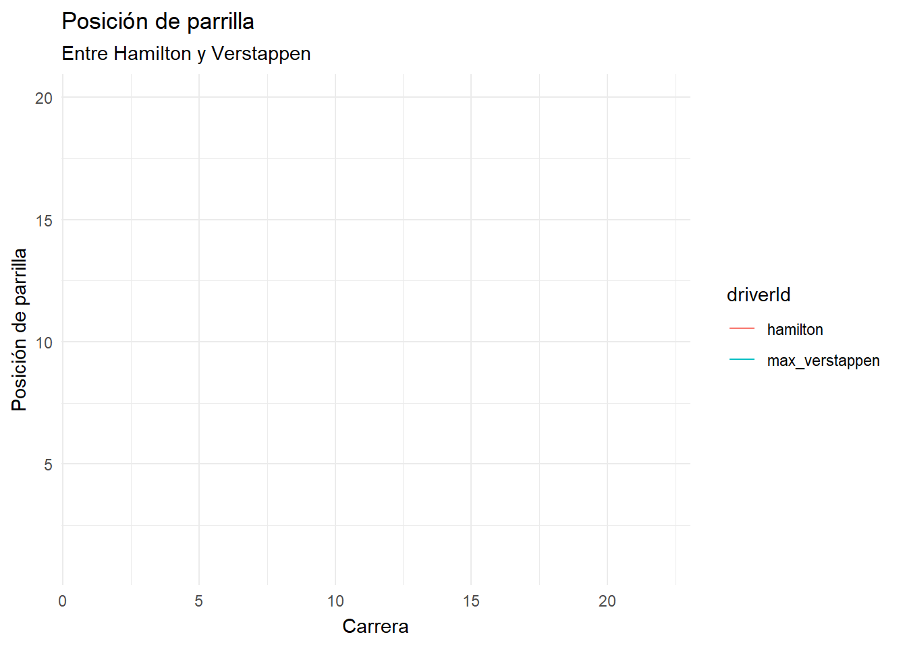
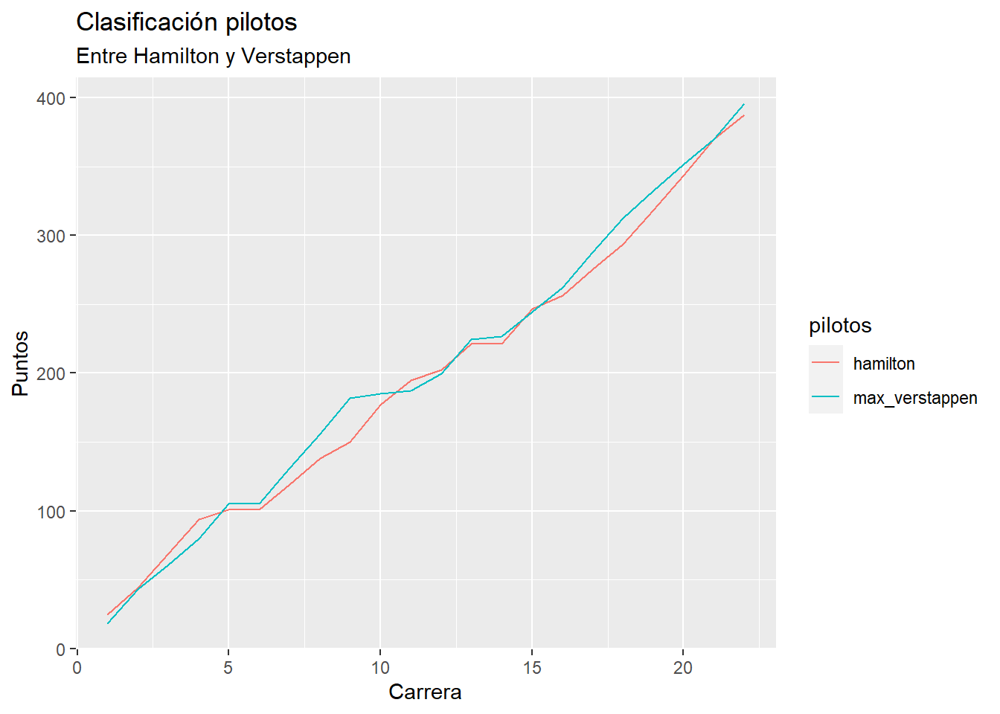
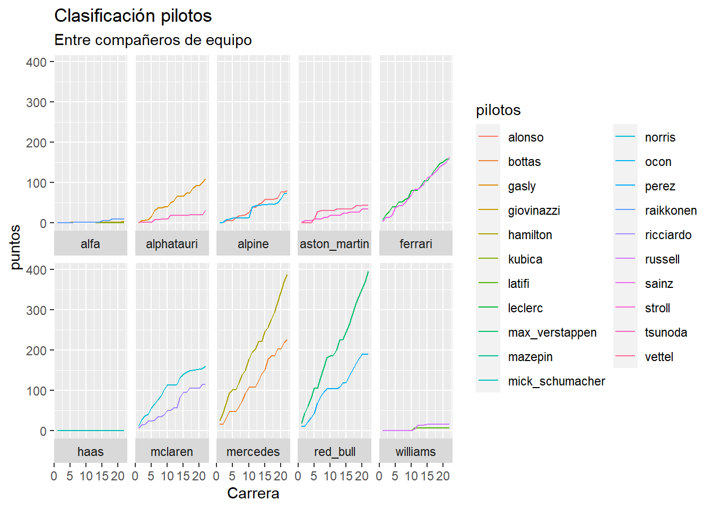

Vamos a utilizar datos del usuario grupoasturias. Los datos se encuentran en aquí
La temporada 2020-2021 fue una autentica locura, no solo por la rivalidad entre Hamilton y Vertappen, si no por las luchas que hubieron entre compañeros de equipo, la que hubo por el mundial de pilotos, entre otras muchas cosas.
Circuitos
En esa temporada incluyó 22 grandes premios repartidos por todo el mundo, los cuales puedes ver en el siguiente cuadro
El mundial de constructores estuvo muy apretado entre Mercedes y Red Bull, durante toda la temporada Hamilton y Verstappen llevaron una rivalidad endiablada con la que iban al límite en las carreras y sumaron prácticamente los mismos puntos para sus equipos, así que los que acabaron decidiendo el mundial de constructores fueron los segundos pilotos de las escuderias.
El mundial de pilotos estuvo muy disputado durante toda la temporada entre Hamilton y Verstappen, muchas veces dependía de si los pilotos corrían en territorio Red Bull o Mercedes, esto se podía aprecias más en la clasificación de antes de la carrera.
Código
#cargamos paqueteslibrary(tidyverse)library(dplyr)#importo los datosclasificacion_Q <- qs::qread("./datos/qualifying_2021.qs")#arreglo datosclasificacion_Q <- clasificacion_Q %>%mutate(position =as.numeric(position)) %>%mutate(round =as.numeric(round))#modifico datosclasi <- clasificacion_Q %>%filter(driverId %in%c("max_verstappen", "hamilton")) %>%select(-c(Q1, Q2, Q1_sec, Q2_sec, Q3_sec))clasi <- clasificacion_Q %>%filter(driverId %in%c("max_verstappen", "hamilton")) %>%select(-c(Q1, Q2, Q1_sec, Q2_sec, Q3_sec))#más paqueteslibrary(ggplot2)library(ggthemes)library(gganimate)#hago el gráficoclasi %>%ggplot(aes(x=round, y=position, color=driverId, group = driverId)) +geom_line(linewidth =3) +transition_reveal(round) +labs(title="Posición de parrilla",subtitle ="Entre Hamilton y Verstappen" , x="Carrera", y="Posición de parrilla") +theme_minimal()

Durante la carrera todo cambiaba, la grada vibraba cuando se acercaban, porque no importaba el circuito que fuese, cuando se cruzaban sabiamos que algo iba a pasar. Tuvimos suerte de vivir un mundial tan igualado y disputado entre estos dos titanes.
Aquí teneis un pequeño resumen de la temporada:
El desarrollo de puntos durante toda la temporada estuvo muy interesante, y no solo entre Hamilton y Vertappen, también entre compañeros de equipo como pasó en Ferrari, que Carlos Sainz acabaría ganando a Charles Leclerc, al igual que pasaría en Alpine, maxima igualdad entre Fernando Alonso y Esteban Ocon, aquí sería el asturiano el que se llevaría el duelo.
Código
#importo los datosresult_carr_pilotos <- qs::qread("./datos/driver_standings_2021.qs")#cargo los paqueteslibrary(tidyverse)library(dplyr)library(ggrepel)result_carr_pilotos<- result_carr_pilotos %>%mutate(points =as.numeric(points)) %>%mutate(round =as.numeric(round))pr <- result_carr_pilotos %>%filter(driverId=="hamilton"| driverId=="max_verstappen") %>%rename(pilotos = driverId)#más paqueteslibrary(ggplot2)library(ggthemes)library(gganimate)#gráfico de hamilton y verstappenpr %>%ggplot(aes(x=round, y=points, color=pilotos, group = pilotos)) +geom_line() +labs(title="Clasificación pilotos",subtitle ="Entre Hamilton y Verstappen" , x="Carrera", y="Puntos")#gráfico de todos los pilotos por escuderíatodos <- result_carr_pilotos todos <- todos %>%rename(pilotos = driverId)todos %>%ggplot(aes(x=round, y=points, color=pilotos, group = pilotos)) +geom_line() +labs(title="Clasificación pilotos",subtitle ="Entre compañeros de equipo" , x="Carrera", y="puntos") +facet_wrap(vars(constructorId), nrow =5, ncol =5, scales ="fixed", strip.position ="bottom")


Ejecutar el código
---title: "Temporada 2020-2021 F1"description: "Resumen temporada 2020-2021"author: Ignacio Muñoz Ayala (igmuoza@alumni.uv.es) #--date: 11-01-2022 #--categories: [trabajo BigData, F1] #--image: "foto_f1.png"title-block-banner: true #- {true, false, "green","#AA0000"}title-block-banner-color: "red" #-"#FFFFFF" toc: truetoc-location: lefttoc-depth: 3smooth-scroll: trueformat: html: backgroundcolor: "#209DF0" #standalone: true link-external-newwindow: true #css: ./assets/my_css_file.css #- CUIDADO!!!!code-tools: truecode-link: true---## Intro Vamos a utilizar datos del usuario `grupoasturias`. Los datos se encuentran en [aquí](https://drive.google.com/drive/folders/17jmy9er05KDhlGpM6bLfvxA3VSN9bBvA)La temporada 2020-2021 fue una autentica locura, no solo por la rivalidad entre Hamilton y Vertappen, si no por las luchas que hubieron entre compañeros de equipo, la que hubo por el mundial de pilotos, entre otras muchas cosas.### CircuitosEn esa temporada incluyó 22 grandes premios repartidos por todo el mundo, los cuales puedes ver en el siguiente cuadro```{r}#Cargo los datoscircuitos <- qs::qread("./datos/races_2021.qs")#cargo paqueteslibrary(tidyverse)library(DT)df <- circuitos %>%select(-c(season, circuit_id, race_name, lat, long, locality)) %>%rename(carrera=round, circuito=circuit_name, pais=country, fecha=date, hora=time)df%>% tibble::as_tibble() %>% DT::datatable(filter ='top', options =list( autoWidth =TRUE))```### PilotosLa parrilla esta compuesta por los siguientes pilotos```{r}#importamos los datosdatos_de_pilotos <- qs::qread("./datos/drivers_2021.qs")#cargamos los paqueteslibrary(tidyverse)library(gt)#tabla de todos los pilotos dt <- datos_de_pilotos %>%select( c(familyName, nationality, permanentNumber)) dt%>% tibble::as_tibble() %>% DT::datatable(filter ='top', options =list( autoWidth =TRUE))``````{r}#importamos los datosdatos_de_pilotos <- qs::qread("./datos/drivers_2021.qs")#cargamos los paqueteslibrary(tidyverse)library(gt)#tabla con foto del piloto más viejodf_max <- datos_de_pilotos %>%select(c(driverId, dateOfBirth, nationality)) %>%slice_min(dateOfBirth,n=1)Bandera <-"https://upload.wikimedia.org/wikipedia/commons/thumb/b/bc/Flag_of_Finland.svg/1920px-Flag_of_Finland.svg.png"df_viejo <- df_max %>%add_column(Bandera)Tabla_viejo <- df_viejo %>%gt()Tabla_viejo <- Tabla_viejo %>%tab_header(title =md("**Piloto más viejo**"))Tabla_viejo <- Tabla_viejo %>%tab_options(heading.background.color ="#0035A5") %>%tab_options(heading.title.font.size =15, column_labels.font.weight ="bold")Tabla_viejo <- Tabla_viejo %>% gt::text_transform(locations =cells_body(columns =c(Bandera)), fn =function(x) {gt::web_image(x, height =50)}) %>%cols_align(align ="center")Tabla_viejo``````{r}datos_de_pilotos <- qs::qread("./datos/drivers_2021.qs")#cargamos los paqueteslibrary(tidyverse)library(gt)df_min <- datos_de_pilotos %>%select(c(driverId, dateOfBirth, nationality)) %>%slice_max(dateOfBirth,n=1)Bandera <-"https://upload.wikimedia.org/wikipedia/commons/thumb/9/9e/Flag_of_Japan.svg/1280px-Flag_of_Japan.svg.png"df_joven <- df_min %>%add_column(Bandera)Tabla_joven <- df_joven %>%gt()Tabla_joven <- Tabla_joven %>%tab_header(title =md("**Piloto más joven**"))Tabla_joven <- Tabla_joven %>%tab_options(heading.background.color ="#BA0000") %>%tab_options(heading.title.font.size =15, column_labels.font.weight ="bold")Tabla_joven <- Tabla_joven %>% gt::text_transform(locations =cells_body(columns =c(Bandera)), fn =function(x) {gt::web_image(x, height =50)}) %>%cols_align(align ="center")Tabla_joven```## Mundial de constructoresEl mundial de constructores estuvo muy apretado entre Mercedes y Red Bull, durante toda la temporada Hamilton y Verstappen llevaron una rivalidad endiablada con la que iban al límite en las carreras y sumaron prácticamente los mismos puntos para sus equipos, así que los que acabaron decidiendo el mundial de constructores fueron los segundos pilotos de las escuderias.```{r}#cargo paqueteslibrary(qs)library(tidyverse)library(stats)library(dplyr)#importo datosmun_constr <- qs::qread("./datos/constructor_standings_2021.qs")#arreglo datosmun_constr <- mun_constr %>%mutate(points=as.numeric(points)) ff <- mun_constr %>%group_by(constructorId) %>%mutate(puntos =cumsum(points)) %>%filter(round=="22") %>%select(-c("wins", "round")) %>%arrange((points)) %>%group_by(constructorId)#hago la tabladf <-ggplot(ff, aes(x =reorder(constructorId, points), y = points, fill=constructorId)) +geom_col( ) +coord_flip() +labs(title ="Clasificación mundial de constructores", subtitle ="2020-2021",x="Escuderías", y="Puntos")df```## Mundial de pilotosEl mundial de pilotos estuvo muy disputado durante toda la temporada entre Hamilton y Verstappen, muchas veces dependía de si los pilotos corrían en territorio Red Bull o Mercedes, esto se podía aprecias más en la clasificación de antes de la carrera.```{r}#cargamos paqueteslibrary(tidyverse)library(dplyr)#importo los datosclasificacion_Q <- qs::qread("./datos/qualifying_2021.qs")#arreglo datosclasificacion_Q <- clasificacion_Q %>%mutate(position =as.numeric(position)) %>%mutate(round =as.numeric(round))#modifico datosclasi <- clasificacion_Q %>%filter(driverId %in%c("max_verstappen", "hamilton")) %>%select(-c(Q1, Q2, Q1_sec, Q2_sec, Q3_sec))clasi <- clasificacion_Q %>%filter(driverId %in%c("max_verstappen", "hamilton")) %>%select(-c(Q1, Q2, Q1_sec, Q2_sec, Q3_sec))#más paqueteslibrary(ggplot2)library(ggthemes)library(gganimate)#hago el gráficoclasi %>%ggplot(aes(x=round, y=position, color=driverId, group = driverId)) +geom_line(linewidth =3) +transition_reveal(round) +labs(title="Posición de parrilla",subtitle ="Entre Hamilton y Verstappen" , x="Carrera", y="Posición de parrilla") +theme_minimal()```Durante la carrera todo cambiaba, la grada vibraba cuando se acercaban, porque no importaba el circuito que fuese, cuando se cruzaban sabiamos que algo iba a pasar. Tuvimos suerte de vivir un mundial tan igualado y disputado entre estos dos titanes.Aquí teneis un pequeño resumen de la temporada:```{r, echo = FALSE, out.width = "60%"}library("vembedr")embed_url("https://www.youtube.com/watch?v=8skRpKa5lYE&ab_channel=StillWatchingNetflix")```El desarrollo de puntos durante toda la temporada estuvo muy interesante, y no solo entre Hamilton y Vertappen, también entre compañeros de equipo como pasó en Ferrari, que Carlos Sainz acabaría ganando a Charles Leclerc, al igual que pasaría en Alpine, maxima igualdad entre Fernando Alonso y Esteban Ocon, aquí sería el asturiano el que se llevaría el duelo.```{r}#importo los datosresult_carr_pilotos <- qs::qread("./datos/driver_standings_2021.qs")#cargo los paqueteslibrary(tidyverse)library(dplyr)library(ggrepel)result_carr_pilotos<- result_carr_pilotos %>%mutate(points =as.numeric(points)) %>%mutate(round =as.numeric(round))pr <- result_carr_pilotos %>%filter(driverId=="hamilton"| driverId=="max_verstappen") %>%rename(pilotos = driverId)#más paqueteslibrary(ggplot2)library(ggthemes)library(gganimate)#gráfico de hamilton y verstappenpr %>%ggplot(aes(x=round, y=points, color=pilotos, group = pilotos)) +geom_line() +labs(title="Clasificación pilotos",subtitle ="Entre Hamilton y Verstappen" , x="Carrera", y="Puntos")#gráfico de todos los pilotos por escuderíatodos <- result_carr_pilotos todos <- todos %>%rename(pilotos = driverId)todos %>%ggplot(aes(x=round, y=points, color=pilotos, group = pilotos)) +geom_line() +labs(title="Clasificación pilotos",subtitle ="Entre compañeros de equipo" , x="Carrera", y="puntos") +facet_wrap(vars(constructorId), nrow =5, ncol =5, scales ="fixed", strip.position ="bottom")```